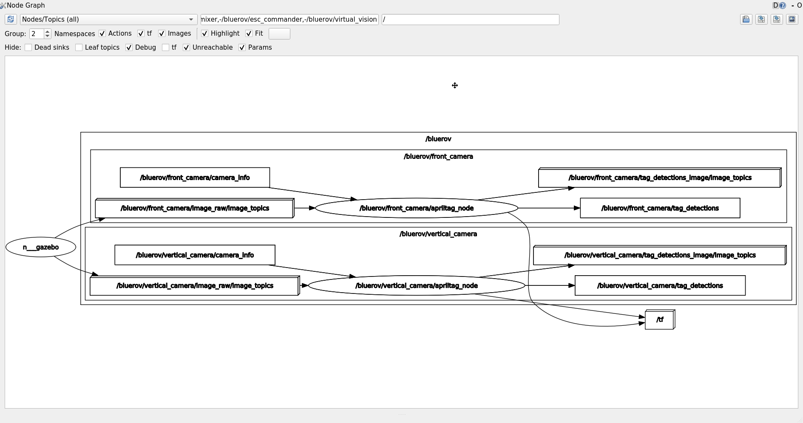

Final Project
Attention
Please make sure to update your local repository.
cd ~/fav/catkin_ws/src/fav
To pull our changes, execute:
git pull origin --ff-only
This section presents some additional features of our simulation environment. It should give you an idea on how to add models to the Gazebo world for your final project. As an example model, we will include a new AprilTag in the world. Additionally, we will look at the AprilTag detection algorithm.
Moreover, note that you can use the position and orientation data of our localization algorithm in experiment. This will allow you to focus on other tasks.
Default World
Probably the default world you want to start off with is tank_with_tags.world. You already know the corresponding launch command from assignment 1.
roslaunch fav_sim gazebo_apriltag_tank_world.launch
BlueROV2 Model with Simulated Cameras
So far, we haven’t actually used simulated cameras on the BlueROV. Instead of simulating a camera image and running the actual AprilTag detection algorithm on this, we have simulated our ‘range’ measurements. This had the benefit of reduced computational burden.
We have added optional simulated camera sensors to the BlueROV description files. To enable them, we have the two launch arguments use_front_camera and use_vertical_camera available. Their default value is false. To enable them, spawn the vehicle as follows:
roslaunch fav_sim spawn_vehicle.launch use_front_camera:=true use_vertical_camera:=true
See spawn_vehicle.launch for reference:
1 <launch>
2 <arg name="vehicle_name" default="bluerov" />
3 <arg name="use_front_camera" default="false" />
4 <arg name="use_vertical_camera" default="false" />
5 <!-- position -->
6 <arg name="x" default="0.5" />
7 <arg name="y" default="1.0" />
8 <arg name="z" default="-0.5" />
9 <!-- roll, pitch, yaw -->
10 <arg name="R" default="0.0" />
11 <arg name="P" default="0.0" />
12 <arg name="Y" default="1.57" />
13 <group ns="$(arg vehicle_name)">
14 <param name="robot_description" command="$(find xacro)/xacro $(find fav_sim)/models/bluerov/urdf/bluerov.xacro use_front_camera:=$(arg use_front_camera) use_vertical_camera:=$(arg use_vertical_camera)" />
15 <node name="spawn_urdf" pkg="gazebo_ros" type="spawn_model" args="-param robot_description -urdf -model $(arg vehicle_name) -x $(arg x) -y $(arg y) -z $(arg z) -R $(arg R) -P $(arg P) -Y $(arg Y)" />
16 <node name="esc_commander" pkg="fav_sim" type="esc_commander" output="screen" />
17 <node name="mixer" pkg="fav_sim" type="simple_mixer" output="screen">
18 <rosparam command="load" file="$(find fav_sim)/config/mixer_default.yaml" />
19 </node>
20 </group>
21 </launch>

The camera images automatically are puplished in the topic: /bluerov/front_camera/image_raw and /bluerov/vertical_camera/image_raw, for the front and the vertical camera, respectively.
Hint
Feel free to modify the camera parameters in fav/fav_sim/models/camera/urdf/camera_macro.xacro, if you feel like you need to.
AprilTag Models
In fav_sim/models/sdf_models there are many AprilTag models. 128 models in total, to be precise. IDs 0 to 90 are used for the tags on the floor.
Modify Gazebo Worlds
In general, you have two options to get your models into a Gazebo world. Either you use predefined world files like the already mentioned tank_with_tags.world and specify the models you want to include.
1 <?xml version="1.0"?>
2 <sdf version="1.6">
3 <world name="base">
4 <scene>
5 <shadows>0</shadows>
6 </scene>
7 <include>
8 <uri>model://sun</uri>
9 </include>
10 <!-- second sun to illuminate Tags -->
11 <light type="directional" name="sun2">
12 <cast_shadows>true</cast_shadows>
13 <pose>0 0 10 0 0 0</pose>
14 <diffuse>0.8 0.8 0.8 1</diffuse>
15 <specular>0.2 0.2 0.2 1</specular>
16 <attenuation>
17 <range>1000</range>
18 <constant>0.9</constant>
19 <linear>0.01</linear>
20 <quadratic>0.001</quadratic>
21 </attenuation>
22 <direction>0.0 1.0 0.0</direction>
23 </light>
24 <physics type="ode">
25 <max_step_size>0.00400</max_step_size>
26 <real_time_update_rate>250.0</real_time_update_rate>
27 </physics>
28 <include>
29 <uri>model://apriltag_tank</uri>
30 </include>
31 </world>
32 </sdf>
Or you spawn models during runtime (like it is done for the BlueROV model for example). The gazebo_ros package provides functionality for this.
Simply start the node in your launch file and pass it the path to the model’s sdf-file you want to spawn. You can also define the initial pose.
To spawn the AprilTag with ID 127, you can add the following lines to your launch file.
1 <node name="choose_arbitrary_name" pkg="gazebo_ros" type="spawn_model"
2 args="-sdf -file $(find fav_sim)/models/sdf_models/tag36_11_00127/model.sdf
3 -model tag_127
4 -x 0.1 -y 0.3 -z -0.5
5 -R 0.9 -P 0.2 -Y 2.4" />
In line 2, we specify the path to the model file we want to include. In line 3 we choose a name shown in Gazebo for the model.
If you have Gazebo already running, you can run the following commands in a terminal
SDF_MODEL=$(rospack find fav_sim)/models/sdf_models/tag36_11_00127/model.sdf
This command stores the path to the model file in a environment variable called SDF_MODEL. This is just for convenience. We could also directly substitute $SDF_MODEL with the path in the next command.
rosrun gazebo_ros spawn_model -sdf -file $SDF_MODEL -model tag_127-x0.1 -y0.3 -z-0.5 -R0.9 -P0.2 -Y2.4
This exectues the model spawner.

Hint
Even though we spawned one of the existing AprilTag models in this example, we are clearly not limited to the existing models. Feel free to add arbitrary models you like.
Hint
There is, of course, documentation available on how to create sdf models. See for example the list of official gazebo tutorials.
AprilTag Detection
Might be/probably is relevant for many of you. In general, you do not have to worry about the actual detection pipeline so much. In the Lab we will start the tag detection and image pipeline for you. In the simulation, the AprilTag detection gets started automagically if the corresponding camera is enabled.
A slight difference between simulation and the lab is the camera distortion. Since we do not simulate distortion, no undistortion is needed. And for the lab, well, there we have some serious distortion we have to get rid of. So the node graph will not look exactly the same, but will still give you the same output: the tag detections.
Depicted below is the node graph containing both pipelines, for the vertical and the front camera. For debugging in the lab, it is often useful to look at the tag detection image. Here, you can see which tags are being detected. In simulation, however, all tags within the camera’s field of view should be detected. Keep in mind that detection performance in simulation is not an indicator for how well your tags will be seen in real life.
Note
Even though we only used distance measurements in the localization assignment, the AprilTag algorithm actually provides us with a full pose estimate of each detected tag relative to the camera.
The detection messages, containing the pose of the detected tags expressed in the corresponding camera frame, have the type AprilTagDetectionArray. Please visit the documentation for the details on the data fields.
An example how to access the data fields of the tag detections, is provided below. It is assumed that the node is started in the bluerov namespace.
#!/usr/bin/env python
import rospy # this is the python interface for ROS
from apriltag_ros.msg import AprilTagDetectionArray
from geometry_msgs.msg import Pose
class Node():
def __init__(self):
rospy.init_node("example_node")
self.detection_sub = rospy.Subscriber('vertical_camera/tag_detections',
AprilTagDetectionArray,
self.on_detections)
def on_detections(self, msg: AprilTagDetectionArray):
rospy.loginfo(f'Detected {len(msg.detections)} tags.')
for detection in msg.detections: # iterate over all detections
# A 'detection' only contains multiple IDs if it is a tag bundle consisting of
# multiple tags. Since we haven't defined tag bundles, and are only detecting
# single, i.e. 'standalone', tags, only a single id will be in the published id array.
tag_id = detection.id[0]
# same for the size as for the id
tag_size = detection.size[0]
frame = detection.pose.header.frame_id
# yeah, a lot of '.pose' ...
pose: Pose = detection.pose.pose.pose
p = pose.position
q = pose.orientation
rospy.loginfo(
f'Tag {tag_id} with size {tag_size:.4f} relative to {frame}: \n'
f'pos: {p.x:.2f} | {p.y:.2f} | {p.z:.2f}\n'
f'q: {q.w:.3f} | {q.x:.3f} | {q.y:.3f} | {q.z:.3f}')
def run(self):
rospy.spin()
def main():
node = Node()
node.run()
if __name__ == "__main__":
main()
The AprilTag algorithm only detects known tags. You need to speficy all tags that you want to detect within a config file. The relevant information for the algorithm is the tag’s ID and the tag’s size.
While you can use different tag sizes simultaneously, you cannot mix different tag families. We use tag family 36h11, and therefore you will need to stick to tags from this family.
An example for the tag configuration is given in fav_sim/config/tags_front_camera.yaml and fav_sim/config/tags_vertical_camera.yaml.
Hint
It is better to not modify these configuration files, but to create new ones and tell the launch file about it:
roslaunch fav_sim simulation.launch use_vertical_camera:=true tag_file_vertical_camera:=/my/custom/path/to/some/tags.yaml
Note
For the lab session just send us your custom .yaml file for the tags and we will set up the apriltag pipeline for you. Since our localization relies on the vertical camera, you probably do not want to change the setup for this camera!
Attention
When you use additional AprilTags, you will need to bring your own tags to the lab. You can easily waterproof them by laminating your printed out tags. There is a laminator at the printer room in Building L. Note that opening times are very limited!